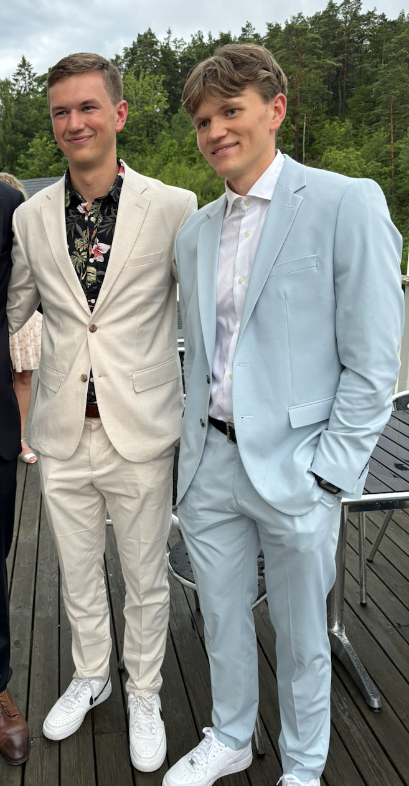
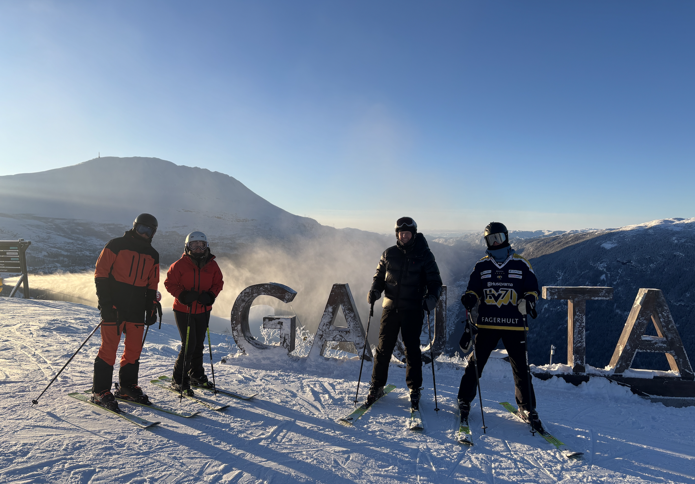

Victor Stommendal
So, you want to know more about me – then you’re in the right place! I’m Victor, an engineering student at Chalmers University of Technology, currently studying Global Systems. I was born and raised in Trollhättan, Sweden – a city with a strong connection to engineering and industry. Growing up in Trollhättan, I was surrounded by my family, including my parents and my younger brother. They have played an important role in shaping who I am today, and I could probably write an entire chapter about the experiences, memories, and lessons they have given me. However, this page is not meant to be a full autobiography (maybe that will be a future project), so I will leave it at saying that I am very grateful for the support and inspiration they have given me throughout my life.


I have always been curious about how things work and, perhaps even more importantly, how different parts influence each other. This curiosity is what led me towards engineering and eventually to Global Systems – a programme focused on understanding complex interactions between technology, society, and natural systems. During my studies, I have developed a strong interest in data analysis, programming, modelling, and using engineering methods to solve complex problems. Through experiences at companies such as Volvo Group and GKN Aerospace, I have gained insight into how engineering is applied in real industrial environments, from system architecture to technology analysis and data visualization. Outside engineering, I enjoy exploring the world around me – both literally and scientifically. I have travelled to over 20 countries, experiencing different cultures, environments, and ways of thinking. Travelling has taught me to be adaptable, curious, and open to new perspectives, which I believe are valuable qualities both personally and professionally.
When I’m not studying, you will probably find me playing squash, travelling, working on personal projects, or exploring new areas of technology. I enjoy challenges, whether it is solving a difficult mathematical problem, understanding a complex system, or learning something completely new. As a person, I would describe myself as calm, goal-oriented, and curious. I like working together with others and believe that the best solutions often come from combining different perspectives. At the same time, I have a competitive side – something that has followed me from sports to engineering projects (and occasionally board games).

Looking ahead, I hope to work at the intersection between technology, data, and sustainable development. I am especially interested in how engineering and data-driven solutions can help solve some of the complex challenges facing society today.
🌍 Countries I Have Visited
I love traveling. I have explored Europe by train, backpacked through Southeast Asia and Australia with friends, and traveled extensively with my family over the years.

I love traveling and have visited 22 countries so far. Below you can see which ones:
- 🇸🇪 Sweden
- 🇸🇬 Singapore
- 🇹🇭 Thailand
- 🇦🇺 Australia
- 🇺🇸 United States
- 🇹🇷 Turkey
- 🇻🇦 Vatican City
- 🇬🇧 United Kingdom
- 🇨🇭 Switzerland
- 🇪🇸 Spain
- 🇸🇲 San Marino
- 🇳🇴 Norway
- 🇲🇨 Monaco
- 🇮🇹 Italy
- 🇫🇮 Finland
- 🇬🇷 Greece
- 🇩🇪 Germany
- 🇫🇷 France
- 🇩🇰 Denmark
- 🇧🇪 Belgium
- 🇦🇹 Austria
- 🇮🇩 Indonesia